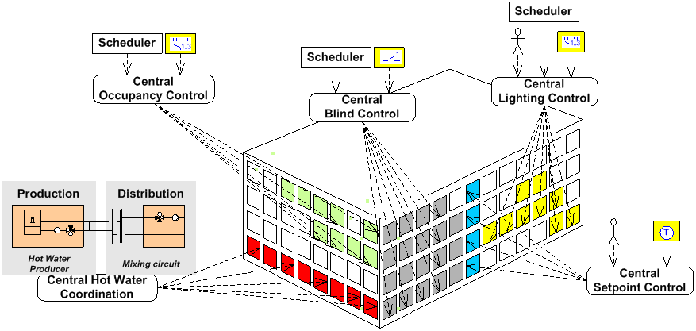

中央功能基础知识
What are central functions?
中央控制功能允许并支持特定群体的集中控制和协调。典型的集中控制功能包括：
- Central occupancy definition
- Central setpoints.
- Central hot water/chilled water coordination (Optimization of primary plants, supply chain optimization).
- Central lighting control.
- Central emergency lighting control
- Central blinds control.

各种来源为中央控制功能提供输入，包括：
- Signals from an external system.
- Commands from a system operator.
- Commands from a building user.
- Signal from Desigo automation stations
- Commands from a scheduler program.
- Commands from superposed central control.
这些信号和命令由中央控制功能评估。中央控制功能通过组管理者和组成员将结果发送到下级控制功能。